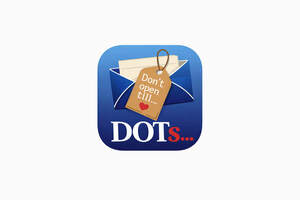

Trade Mark Journal No.2026/001 2 January 2026
UK00004312009 17 December 2025 (9,42)

- Class 9
- Mobile apps; Mobile application software; Application software for mobile phones; Downloadable smart phone application software; Smartphone software; Application software for mobile devices; Smartphone software applications, downloadable; Downloadable application software for smart phones; Computer application software for mobile phones; Downloadable smart phone applications (software); Downloadable software in the nature of a mobile application; Downloadable software applications for mobile phones; Mobile software; Application software for smart phones; Downloadable computer software for use as an application programming interface (API); Software for mobile device management; Mobile device management software; Software for mobile phones; Downloadable mobile applications; Computer software for use as an application programming interface (API); Application software for smart TV; Software applications for use with mobile devices; Software applications for mobile devices; Software and applications for mobile devices; Downloadable emoticons for mobile phones; Downloadable applications for use with mobile devices; Downloadable applications for mobile devices; Downloadable mobile applications for booking taxis; Downloadable software in the nature of a mobile application for playing games; Web application software; Computer game software for use on mobile devices; Downloadable application software; Electronic game software for mobile phones; Application software; Downloadable mobile applications for use with wearable computer devices; Computer software for mobile applications that enable interaction and interface between vehicles and mobile devices; Downloadable graphics for mobile phones; Software for online messaging; Application software for wireless devices; Software as a medical device [SaMD], downloadable; Computer application software for mobile telephones; Web application and server software; Mobile phone covers; Computer game software for use on mobile and cellular phones; Downloadable ringtones for mobile phones; Application software for robot; Computer software for mobile phones; Downloadable mobile applications for the management of data; Computer software for application and database integration; Augmented reality software for use in mobile devices; Downloadable software in the nature of a mobile application for food delivery and ordering; Downloadable instant messaging software; Software for smartphones; Educational mobile applications; Plugin software; Application server software; Mobile applications for booking taxis; Enterprise application software [EAS]; Dashboard mounts for mobile phones; Computer application software for TV; Mobile phone speakers; Downloadable mobile coupons; Mobile phone chargers; Interactive game software; Downloadable software in the nature of a mobile application for dark kitchen delivery and ordering; Business application software; Mobile phone cases; Computer application software; GPS navigation device; Mobile phones; Downloadable mobile applications for the management of information; Displays for mobile phones; Devices for hands-free use of mobile phones; Dashboard software; Mobile phone docking stations; Educational tablet applications; Mobile phone straps; Interactive video software; USB web keys for automatically launching pre-programmed website URLs; Instant messaging software; Application simulation software; Application development software; Downloadable video game software; Interactive casino games provided through a computer or mobile platform; Computer application software for use with wearable computer devices; Interactive database software; Computer screen saver software, recorded or downloadable; Mobile phone screen protectors; Downloadable software applications; Digital dashboard software; Downloadable application software for virtual environments; Computer programs and software for image processing used for mobile phones; Application software for televisions; GPS software; Interface software; Software development kit [SDK]; Mobile phone battery chargers; Video game software; Map software; Display modules for mobile phones; Computer games programs downloaded via the internet [software]; Downloadable game software; Internet messaging software; Downloadable computer game software via a global computer network and wireless devices; Downloadable game related software applications; Braille mobile phones; Interactive software; Downloadable electronic game software for wireless devices; Downloadable emoticons for mobile telephones; Application suites [software]; Computer software applications, downloadable; Downloadable computer software applications; Computer application software featuring games and gaming; Computer games programmes downloaded via the internet [software]; Website development software; Software for GPS navigation; Computer applications for car audio video navigation; Downloadable computer software for use as a digital wallet; Graphical user interface software; Platform software; Computer application software for use in implementing the Internet of Things [IoT]; Computer game software, downloadable; Downloadable computer game software; Application software for social networking services via internet; Game software.
- Class 42
- Updating of smartphone software; Smartphone software design; User authentication services using single sign-on technology for online software applications; Rental of application software; Unlocking of mobile phones; Design and development of software in the field of mobile applications; Hosting of mobile applications; Development and design of mobile applications; Design and development of software for instant messaging; Video game software development; Video game software design; Providing user authentication services using single sign-on technology for online software applications; Update of computer software.
Ian Henderson